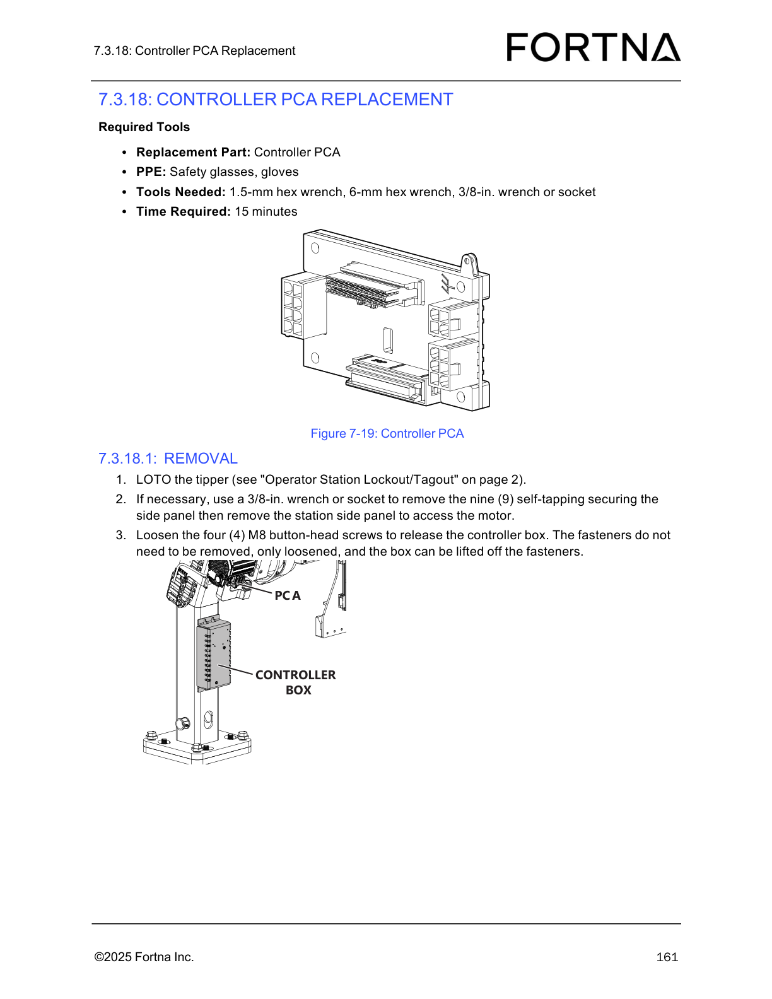

| Procedure ID | proc_remove_and_unplug_controller_pca_in_tipper_station_v1 |
|---|---|
| Title | Remove and unplug Controller PCA in a tipper station (Controller PCA Replacement — Removal) |
| Procedure Type | recovery |
| Primary Role | operator |
| Support Safe | Yes |
| Capability Tags | tipper_station_fault |
| Access Surface | physical_floor |
| Audience Roles | operator |
| Failure Pattern Tags | None |
| Validation Status | needs_sme_review |
| Merge Status | source_finalized |
Safely remove the Controller PCA from an OptiSweep tipper station by applying LOTO, accessing the controller box, loosening the controller box mounting screws, removing the ribbon cable retainer screws, and unplugging the PCA connections (FFC, ribbon cable, and three Molex connectors) so the assembly is ready for replacement.
When performing Controller PCA Replacement — Removal on an OptiSweep tipper station and you must remove/unplug the Controller PCA connections for replacement.

Responsible role: operator
Instruction:
Perform LOTO on the tipper using the referenced "Operator Station Lockout/Tagout" procedure (page 2).
Expected result:
The tipper is locked out (LOTO confirmed) before proceeding to internal components.
Stop or Escalate If:
Responsible role: operator
Instruction:
If necessary, use a 3/8-in. wrench or socket to remove the nine (9) self-tapping securing screws for the station side panel, then remove the station side panel to access the motor.
Expected result:
Station side panel is removed (when needed) and the motor access area is reachable.
Responsible role: operator
Instruction:
Loosen the four (4) M8 button-head screws that secure the controller box. Do not remove the fasteners—loosen them so the controller box can be lifted off the fasteners.
Expected result:
Controller box is released such that it can be lifted off after loosening the four (4) M8 button-head screws.
Stop or Escalate If:
Responsible role: operator
Instruction:
Remove the two (2) M3 socket-head screws holding the ribbon cable retainer in place.
Expected result:
Ribbon cable retainer is released after removing the two (2) M3 socket-head screws.
Stop or Escalate If:
Responsible role: operator
Instruction:
Unplug all connections from the PCA: FFC, ribbon cable, and the three Molex connectors.
Expected result:
All PCA connections are unplugged: FFC and ribbon cable are disconnected, and three Molex connectors are unplugged.
Stop or Escalate If: